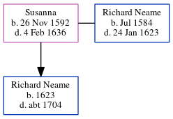

Susanna Neame 1592 - 1636
[ Home ] | [ Calendar ] | [ Surnames Index ] | [ Errors ] | [ Family History ]Susanna, the 10 times great-grandmother of Nigel Horne, was born in Goodnestone, Kent, England on 26 Nov 1592 and married Richard Neame (with whom she had 1 child, Richard) in Woodnesborough, Kent, England on 11 Nov 16161.
She died on 4 Feb 1636.
Children
- Richard was born in 1623
Citations
- Kent, England, Tyler Index to Parish Registers, 1538-1874 Online publication - Provo, UT, USA: Ancestry.com Operations, Inc., 2010. This collection was indexed by Ancestry World Archives Project contributors.Original data - Frank Watt Tyler. The Tyler Collection. Canterbury, Kent, England: The Institute of Herald
Family Tree
Map
Generated by ged2site. Last updated on Jul 3, 2024
Known Issues
Birth date (26 Nov 1592) has no citations
Death date (4 Feb 1636) has no citations
Date of death is known, but not place